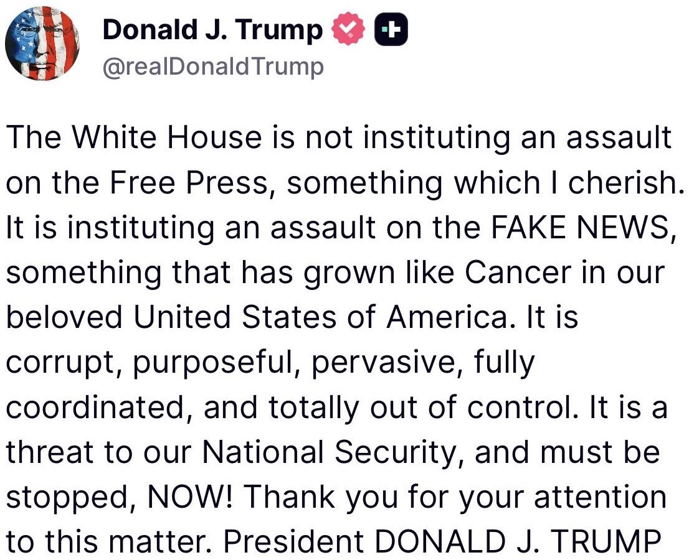
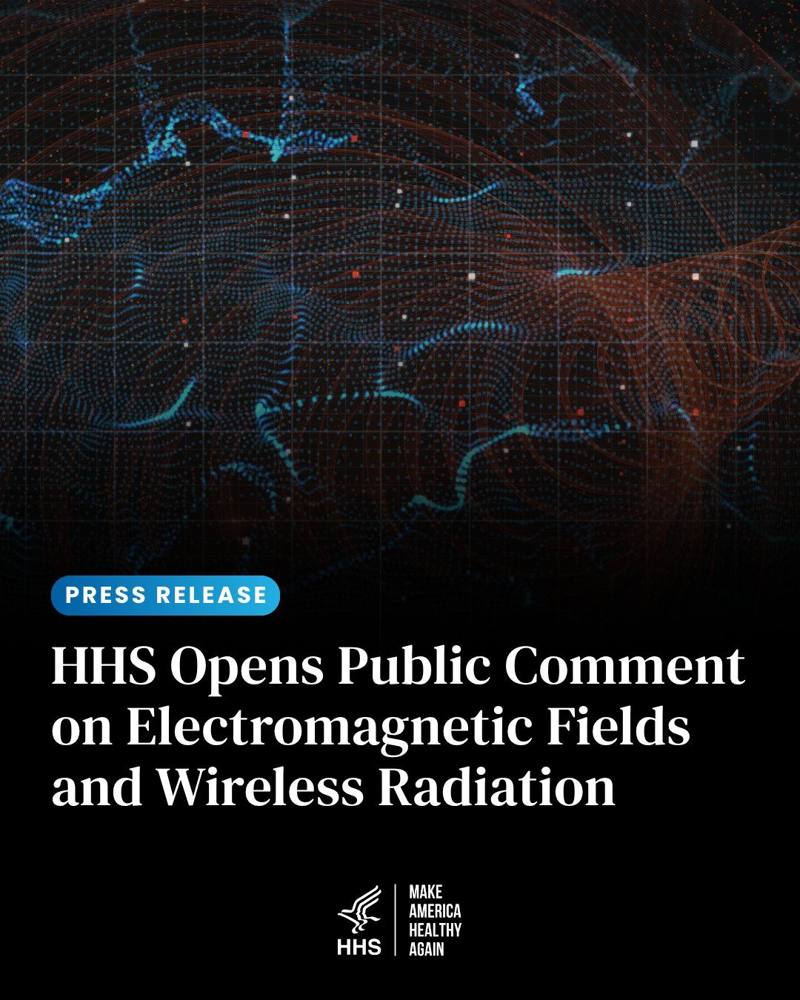

BREAKING: US Treasury Secretary Bessent says all Iranian airlines will be "shut down" around the world on September 23rd. Bessent says any airport or company that provides Iranian airlines with fuel, landing services, ticket sales, or other assistance will be "knocked out" of the US Dollar system.
“The White House is not instituting an assault on the Free Press, something which I cherish. It is instituting an assault on the FAKE NEWS, something that has grown like Cancer in our beloved United States of America…” - President Donald J. Trump

BREAKING:
The nation's major television networks are declining to participate in White House pool duties moving forward in response to the Trump administration's decision to bar CNN, MS NOW and POLITICO from the White House, Fox News Washington bureau chief Bryan Boughton wrote in an email to TV pool subscribers.
FLASHBACK: CNN and MSNBC Have Cited Falsified Statistics 73 Times Over the Last 24 Hours
White House Access Is a Privilege — Not a Right
The biggest news in finance you’ll read today:
The digital euro has entered the capital markets. Pontes is live.
The Eurosystem’s (@ecb) new settlement service connects DLT-based market infrastructure with central bank money. Axiology is one of four market infrastructures participating in the launch, alongside Cashlink, SWIAT and @Clearstream.
JUST IN: 🇷🇺 Russia holds talks with major banks and financial firms to expand access to the crypto market.
.@CFTC Innovation Task Force to Host Frontier Forum Series on Innovative Financial Technologies:
Wireless technology is everywhere. Our research needs to keep up.
HHS is taking a closer look at what that exposure could mean for our health, and asking Americans, scientists, physicians, industry, and public health experts to submit evidence and information on potential health effects of electromagnetic fields (EMFs), radiofrequency (RF) radiation, and wireless radiation exposure.

🚨 JUST IN: President Trump just EMERGED with Ugandan NYC Mayor Mamdani at Gracie Mansion
MAMDANI: We spoke about how to improve the lives of New Yorkers and build a better, stronger New York
This was a CLOSED PRESS meeting for over an HOUR. Now they're in public, speaking directly in front of the media!
BREAKING: The US has proposed extending its trade deal with China by 6 months ahead of President Xi's visit to the US, per NYT.
Officials are also discussing setting up dialogue on AI and promoting trade in "non-sensitive goods" like energy and consumer products between the US and China.
China is reportedly pushing for an extension of the trade deal for even longer than 6 months.
US markets rise to a new high of day on the news.
JUST IN: 🇨🇳🇺🇸 China expels top military general for allegedly leaking Chinese nuclear weapons data to US.
JUST IN: Treasury Sec. Bessent announces U.S. & China have agreed to establish an AI dialogue on shared goals & threats.
UPDATE: An Amtrak construction crew accidentally cut into a fiber line in New Jersey which caused a telecom outage and forced FAA to pause flights in the Northeast.
Right now: - Flights are resuming at LGA and PHL - Flights into EWR, JFK, and Teterboro Airport are paused
This incident underscores the need for additional funding to modernize aging infrastructure and prevent disruptions like this in the future.
Follow @FAANews for updates.
🚨 #BREAKING: Since renaming the Gulf of Mexico to the Gulf of America this year, there have been zero hurricanes — the first time in over 100 years.
The U.S. Dollar has lost 30% of its purchasing power over the last six years